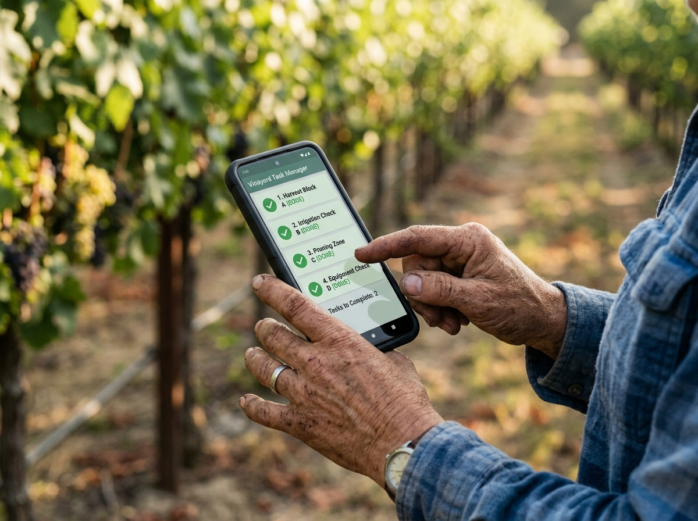

Enregistrez chaque intervention depuis le terrain. Suivez vos prestations client par client, parcelle par parcelle. Facilitez votre facturation.
VitiTrack est conçu pour simplifier le quotidien des viticulteurs et agriculteurs. Chaque fonctionnalité répond à un besoin concret du terrain.
Enregistrez une intervention en quelques secondes : client, tâche, parcelle. L'interface est pensée pour être utilisée avec des gants de travail.
Associez les parcelles à chaque client pour un suivi précis et sans erreur. Retrouvez instantanément la bonne parcelle au bon moment.
Date, heure, utilisateur, client, tâche, parcelle et statut de facturation : chaque intervention est tracée avec précision.
Marquez vos prestations comme « À facturer », « Facturée » ou « En attente ». Préparez vos factures en un clin d'œil.
Chaque salarié saisit ses interventions depuis son propre appareil. Le responsable retrouve tout dans un tableau de bord unique.
Utilisez VitiTrack aussi bien sur smartphone dans les vignes que sur ordinateur au bureau. L'interface s'adapte à votre écran.
Pas de formation complexe, pas d'installation lourde. VitiTrack est prêt en quelques minutes.
Ajoutez vos clients et associez-leur leurs parcelles. C'est la base de votre suivi.
Depuis votre smartphone, sélectionnez le client, la tâche et la parcelle. C'est enregistré.
Retrouvez toutes vos interventions dans le tableau de bord et préparez la facturation.
Le tableau de bord centralise l'ensemble de vos chantiers viticoles. Créez des interventions, filtrez par client ou parcelle et préparez votre facturation en temps réel.
Module de création d'intervention : Saisie express du salarié, du client et sélection dynamique de la parcelle associée.
Historique et statuts interactifs : Bascule directe en 1 clic entre « À facturer » et « Facturée ».
Calculs automatiques : Suivi des montants prévisionnels au temps passé ou au forfait hectare.
Export comptable : Fichier CSV instantané pour votre logiciel de comptabilité.

VitiTrack a été conçu en collaboration avec des viticulteurs. L'interface est optimisée pour une saisie rapide, même avec des mains sales ou des gants.
Saisie en moins de 10 secondes
Fonctionne même avec une connexion faible
Interface lisible en plein soleil
Boutons larges, adaptés aux gants
Choisissez la formule adaptée à votre exploitation. Tous les plans incluent un essai gratuit de 14 jours.
Pour les petites exploitations
Pour les exploitations en croissance
Pour les grandes structures
Découvrez ce que nos utilisateurs pensent de l'application.
« Avant VitiTrack, je notais tout sur des bouts de papier. Maintenant, mes salariés enregistrent directement depuis les vignes et je retrouve tout le soir au bureau. »
« La préparation des factures me prenait une journée entière chaque mois. Avec VitiTrack, c'est fait en une heure. Un gain de temps incroyable. »
« L'application est simple, rapide, et fonctionne même quand le réseau est mauvais dans les parcelles. Exactement ce qu'il nous fallait. »
Tout ce que vous devez savoir avant de démarrer avec VitiTrack.
Rejoignez les viticulteurs et agriculteurs qui gagnent du temps chaque jour avec VitiTrack.